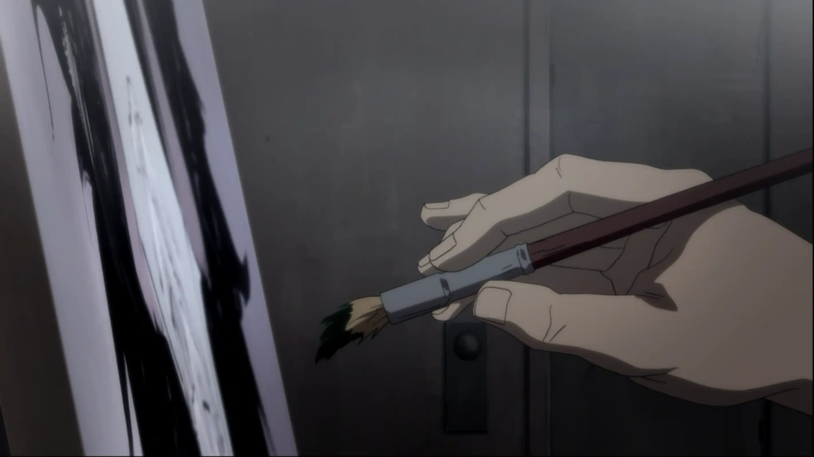
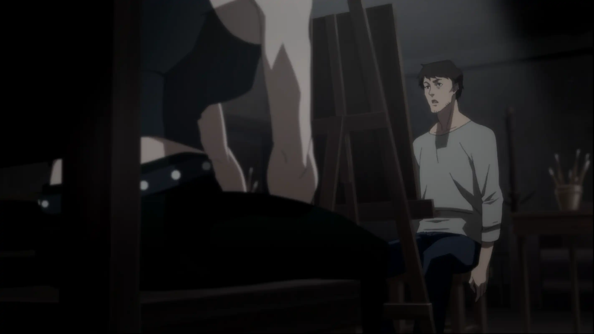
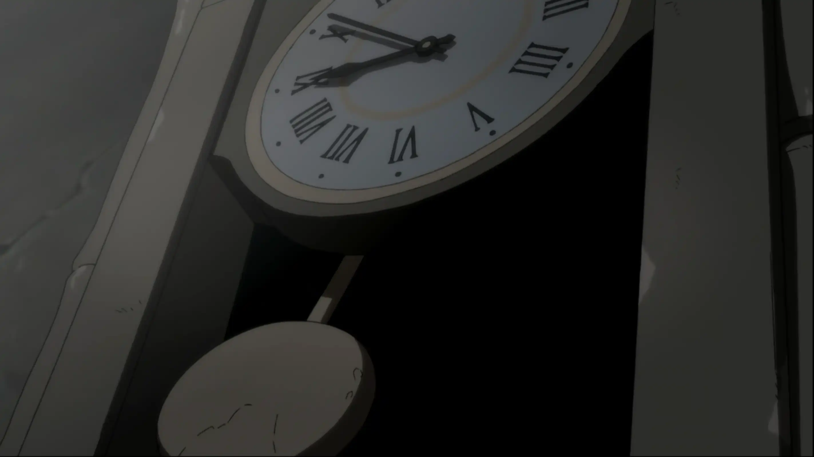
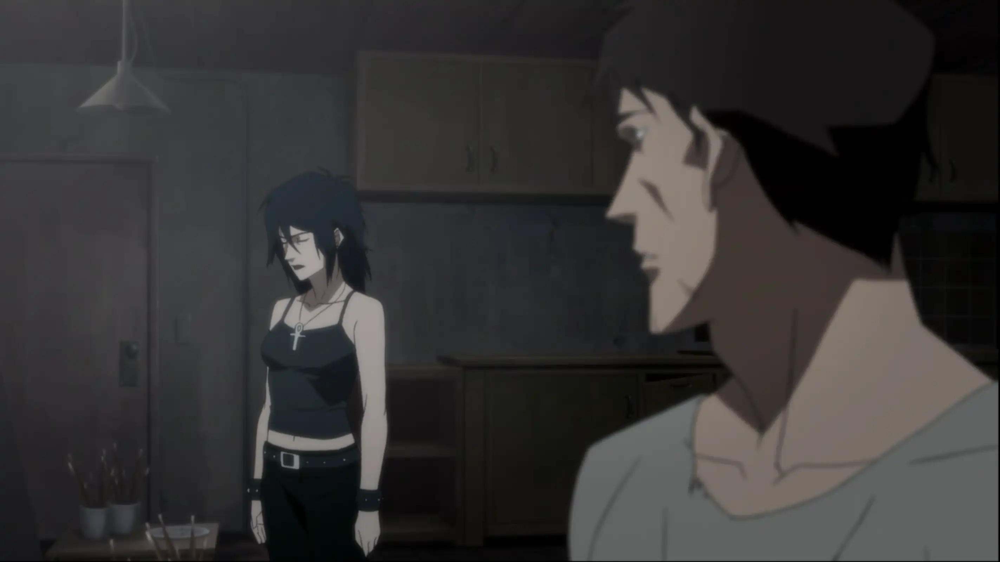
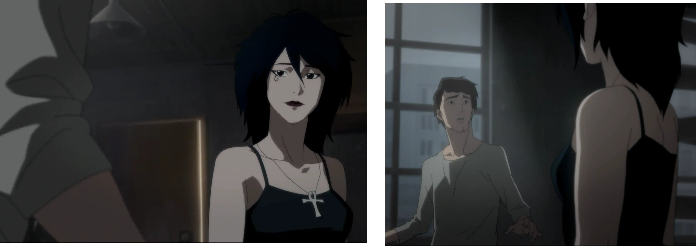
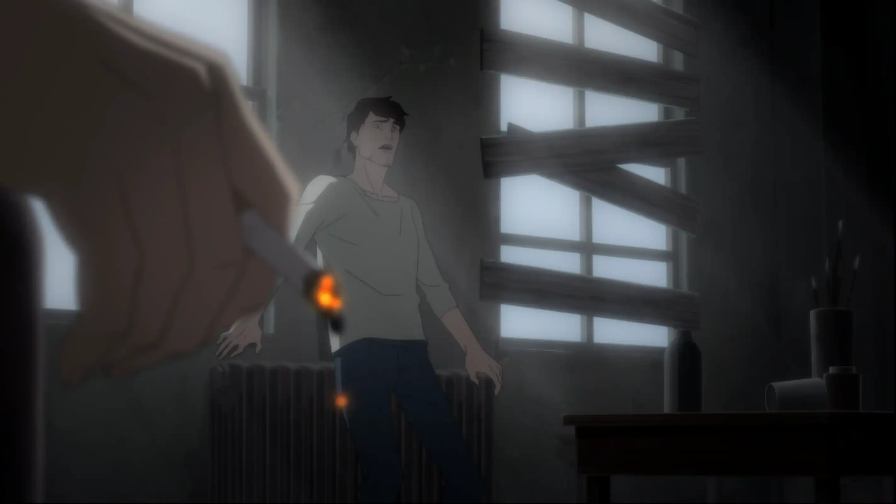

Donde el Tiempo se Quiebra | Revelación
A veces, el último trazo llega cuando ya no queda nada por salvar.
Me doy cuenta de que he terminado la pintura. No sé cuánto tiempo pasó, pero siento el cuerpo liviano, como si algo dentro de mí se hubiera liberado.
Ella me observa y me pregunta si estoy satisfecho con lo que hice. Estoy a punto de responder que sí… cuando algo extraño me sacude.
Me acerco a la ventana sin entender por qué me siento tan inquieto. Afuera todavía es de noche. Es imposible… juraría que pasaron horas, quizás demasiado.

Miro con más atención. Todo afuera está detenido. Como si el mundo entero fuera una fotografía inmóvil, congelada en un instante que no avanza.

Un escalofrío me recorre. El silencio, la quietud… algo dentro de mí entiende que esto no es normal. Que no es humano, el tiempo se ha detenido.
Ella da un paso hacia mí y rompe el silencio. Me dice que no debo preocuparme por el tiempo. Que ya no importa. Porque el tiempo no significa nada… para los muertos.
La palabra me atraviesa. Muerto. Me toma un instante procesarlo, pero la idea se siente demasiado natural… demasiado familiar.
Empiezo a preguntarme quién es realmente ella. Qué lugar ocupa en todo esto. Por qué me guió hasta aquí.
Y no puedo evitarlo. Me asusto. Algo en su mirada, en su calma absoluta… me hace entender que lo que viene no será sencillo.
